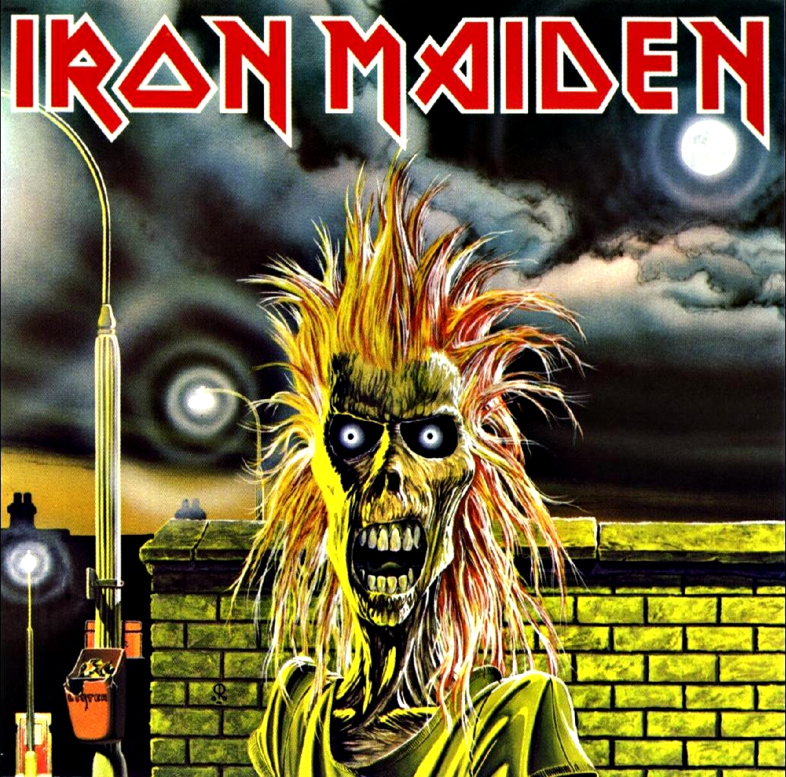

ROCK TRENDS — Bem-vindo ao universo do Rock!
Está preparado para adentrar e conhecer as maiores curiosidades e toda a história por trás da sua banda favorita?



ROCK TRENDS — Bem-vindo ao universo do Rock!
Está preparado para adentrar e conhecer as maiores curiosidades e toda a história por trás da sua banda favorita?
A Rock Trends é o lugar ideal para descobrir notícias e curiosidades sobre sua banda favorita. Aqui, você encontra a história dos álbuns, informações completas sobre os integrantes, vídeos de bastidores, detalhes da produção e até quizzes para testar seus conhecimentos musicais.
Na Rock Trends você tem a opção de se cadastrar e responder um questionário! Assinale as alternativas que correspondem a sua opinião e nos ajude a melhorar o site, e ao fazer Login você tem a opção de ver quantas pessoas com a mesma opinião que você estão no site.